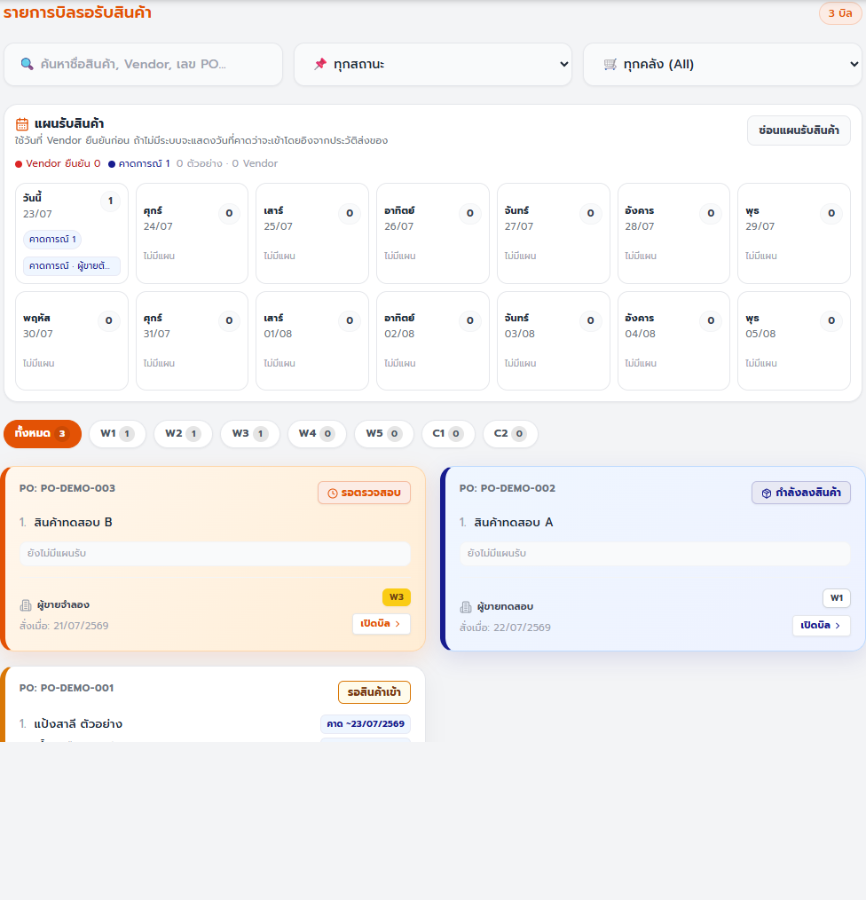
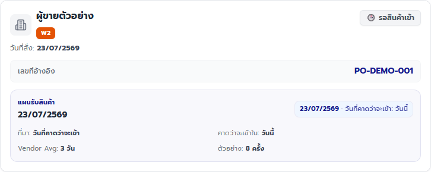
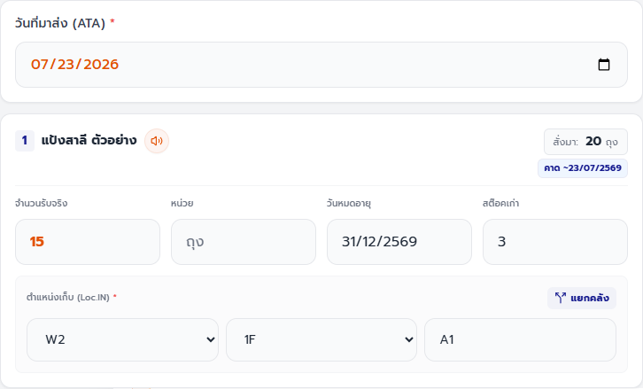
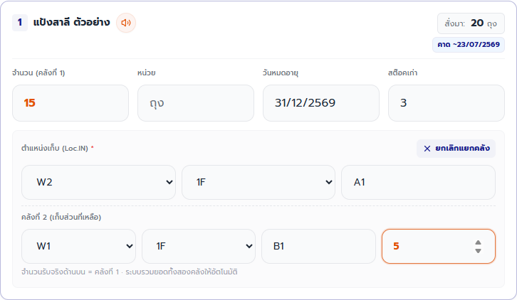
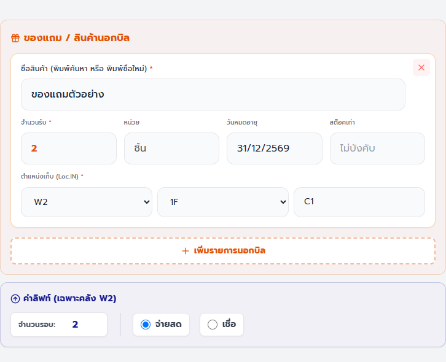
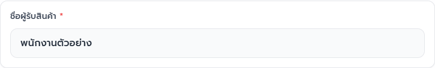
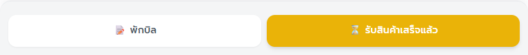
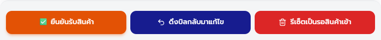
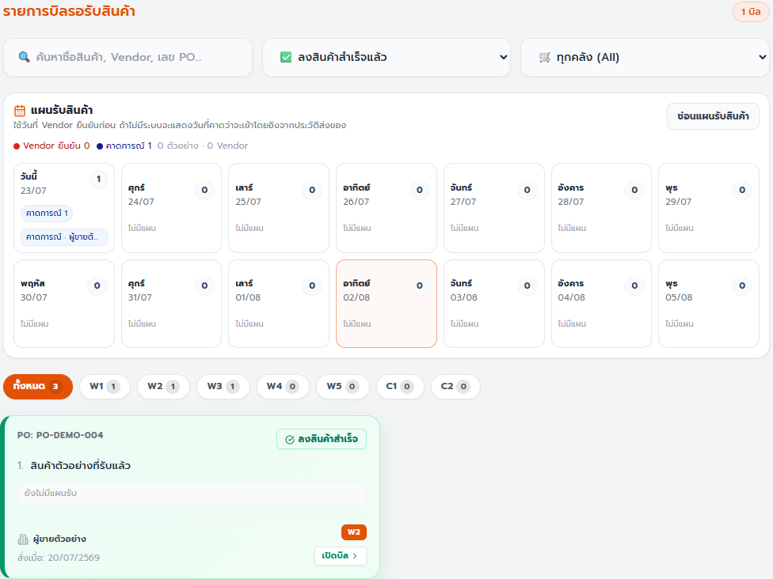

คู่มือพนักงาน · GR — รับสินค้าเข้าคลัง
คู่มือรับสินค้าและส่งตรวจ GR
รับสินค้าเข้าคลัง บันทึกจำนวนและตำแหน่งให้ตรงของจริง ส่งให้หัวหน้าตรวจ และปิดบิลโดยไม่ใช้คำสั่งเสี่ยงผิดงาน
ฉบับทดสอบภายใน: ใช้ตรวจขั้นตอนและความเข้าใจก่อนประกาศใช้
ส่วนที่ 1
เตรียมก่อนเริ่ม
- เปิด GR ผ่าน Main Portal และตรวจว่าชื่อผู้รับของด้านบนเป็นชื่อของคุณ
- พนักงานรับสินค้าต้องมีสิทธิ์ receiveGR
- ผู้กดยืนยันขั้นสุดท้ายต้องมีสิทธิ์ approveGR และบทบาทที่ระบบกำหนด
- เตรียมบิล PO ของจริง วันที่มาส่ง ชื่อผู้รับ จำนวนจริง วันหมดอายุ และตำแหน่งเก็บ
ส่วนที่ 2
ทำตามขั้นตอน
-
พนักงานรับสินค้า
ค้นหาบิลที่ต้องรับ
ทำ: ใช้ช่องค้นหา ตัวกรองสถานะ คลัง และแผนรับสินค้า แล้วเปิดบิลที่ขึ้นว่า “รอสินค้าเข้า”
เช็ก: ชื่อผู้ขาย เลข PO คลัง และรายการสินค้าตรงกับบิลที่มาส่ง

ค้นหาและกรองบิล
บัตรบิลและสถานะ
ค้นหาบิลจากชื่อสินค้า ผู้ขาย เลข PO สถานะ หรือคลัง แล้วเปิดบัตรที่ตรงกับของจริง ภาพอ้างอิง GR 20260722.01 -
พนักงานรับสินค้า
ตรวจหัวบิลก่อนกรอก
ทำ: เทียบผู้ขาย เลขอ้างอิง คลัง วันที่สั่ง และแผนรับสินค้ากับเอกสารจริง
เช็ก: ข้อมูลหัวบิลตรงกันทั้งหมด หากไม่ตรงให้กลับหน้ารายการและหยุดบิลนี้

ตรวจบริบทของบิลให้ครบก่อนเริ่มลงจำนวน เพื่อไม่รับสินค้าเข้าผิด PO หรือผิดคลัง ภาพอ้างอิง GR 20260722.01 -
พนักงานรับสินค้า
ลงวันที่ จำนวน และตำแหน่งของสินค้าที่รับ
ทำ: เลือก “วันที่มาส่ง (ATA)” แล้วกรอกจำนวนรับจริง วันหมดอายุเมื่อมี สต๊อคเก่าเมื่อใช้ และชั้นพร้อมโซนของทุกรายการที่รับ
เช็ก: ATA ตรงวันที่ของมาถึง และแต่ละรายการที่มีจำนวนมากกว่า 0 มีตำแหน่งตรงกับที่นำไปเก็บ

ลง ATA และข้อมูลตามของจริงทีละรายการ ตำแหน่งเก็บต้องอยู่ในคลังที่บิลกำหนด ภาพอ้างอิง GR 20260722.01 -
พนักงานรับสินค้า · ทำเฉพาะเมื่อแบ่งเก็บ
แบ่งสินค้าเข้าคลังหรือตำแหน่งที่สอง
ทำ: กด “แยกคลัง” ใส่จำนวนคลังที่ 1 และคลังที่ 2 แล้วเลือกชั้นและโซนของทั้งสองจุด
เช็ก: จำนวนคลังที่ 1 บวกคลังที่ 2 เท่ากับจำนวนรับจริง ระบบจะรวมยอดทั้งสองคลังเมื่อบันทึก

ตรวจผลรวมของสองคลังด้วยตนเองก่อนบันทึก และอย่าปล่อยชั้นของจุดที่สองว่าง ภาพอ้างอิง GR 20260722.01 -
พนักงานรับสินค้า · ทำเฉพาะเมื่อมีข้อมูลเพิ่ม
บันทึกของแถมและค่าลิฟท์เมื่อมี
ทำ: เพิ่มของแถมพร้อมชื่อ จำนวน และตำแหน่ง หากเป็น W2 และมีค่าลิฟท์ ให้ใส่จำนวนรอบแล้วเลือก “จ่ายสด” หรือ “เชื่อ”
เช็ก: ของแถมและค่าลิฟท์ตรงเหตุการณ์จริง หากไม่มีค่าลิฟท์ให้ปล่อยจำนวนรอบเป็น 0

เพิ่มเฉพาะสินค้าที่รับจริง ส่วนค่าลิฟท์แสดงเฉพาะ W2 และบันทึกเมื่อจำนวนรอบมากกว่า 0 ภาพอ้างอิง GR 20260722.01 -
พนักงานรับสินค้า
ตรวจชื่อผู้รับและหมายเหตุ
ทำ: ตรวจ “ชื่อผู้รับสินค้า” และเขียนหมายเหตุท้ายบิลเมื่อมีข้อมูลสำคัญ เช่น แวทหรือเลขที่ใบกำกับ
เช็ก: ชื่อผู้รับเป็นคนที่รับของจริง และหมายเหตุไม่มีข้อมูลผิดบิล

ชื่อผู้รับและวันที่ ATA เป็นข้อมูลบังคับเมื่อส่งตรวจหรือยืนยันขั้นสุดท้าย ภาพอ้างอิง GR 20260722.01 -
พนักงานรับสินค้า · เมื่อยังลงของไม่เสร็จ
พักบิลแล้วกลับมาทำต่อ
ทำ: กด “พักบิล” เมื่อยังนับหรือจัดเก็บไม่ครบ จากนั้นกลับมาหาบัตรสถานะ “กำลังลงสินค้า” เพื่อทำต่อ
เช็ก: ระบบแจ้ง “พักบิล (Draft) เรียบร้อย” และบิลอยู่ในสถานะ Draft GR

ใช้ “พักบิล” เมื่อข้อมูลยังไม่ครบ ห้ามกดส่งตรวจเพื่อใช้แทนการบันทึกร่าง ภาพอ้างอิง GR 20260722.01 -
พนักงานรับสินค้า · เมื่อข้อมูลครบแล้ว
ส่งบิลให้หัวหน้าตรวจ
ทำ: ตรวจจำนวน ตำแหน่ง ATA และชื่อผู้รับอีกครั้ง แล้วกด “รับสินค้าเสร็จแล้ว” เพียงครั้งเดียว
เช็ก: ระบบแจ้ง “ส่งให้ตรวจสอบเรียบร้อยแล้ว!” และบิลเปลี่ยนเป็น “รอตรวจสอบ”
ปุ่มสีเหลืองส่งข้อมูลไป Pending Review หลังจากนั้นพนักงานรับสินค้าจะแก้ช่องข้อมูลไม่ได้ ภาพอ้างอิง GR 20260722.01 -
หัวหน้า / ผู้อนุมัติเท่านั้น
ตรวจและยืนยันรับสินค้า
ทำ: เปิดบิล “รอตรวจสอบ” เทียบข้อมูลกับเอกสารและของจริง แล้วกด “ยืนยันรับสินค้า”
เช็ก: ระบบแจ้ง “ยืนยันรับสินค้าเข้าคลังสมบูรณ์!” และสถานะเป็น GR Completed

ผู้อนุมัติใช้ปุ่มสีส้มเมื่อข้อมูลถูกต้อง ส่วนปุ่มสีน้ำเงินและแดงเป็นคำสั่งแก้ไขกรณีพิเศษ ภาพอ้างอิง GR 20260722.01 -
พนักงานรับสินค้าและหัวหน้า
ตรวจผลสำเร็จก่อนจบงาน
ทำ: เลือกสถานะ “ลงสินค้าสำเร็จแล้ว” แล้วค้นหาบิลเดิม
เช็ก: พบบัตรบิลที่ขึ้นว่า “ลงสินค้าสำเร็จ” และงานพร้อมส่งต่อให้ PO ทำ 2-Way Match

ตัวกรองสถานะสำเร็จ
บัตรบิลที่รับแล้ว
ใช้ตัวกรอง GR Completed ตรวจว่าบิลปิดสมบูรณ์ก่อนจบงานหรือส่งต่อฝ่ายจัดซื้อ ภาพอ้างอิง GR 20260722.01
ส่วนที่ 3
เช็กก่อนจบงาน
งานเสร็จเมื่อครบทั้ง 5 ข้อ
- จำนวนรับ ตำแหน่ง วันหมดอายุ ของแถม และค่าลิฟท์ตรงกับของจริง
- บิลที่พนักงานส่งแล้วขึ้น “รอตรวจสอบ”
- บิลที่หัวหน้าอนุมัติแล้วขึ้น “ลงสินค้าสำเร็จ”
- ไม่มีข้อความผิดพลาดหรือบิลที่ไม่แน่ใจว่าบันทึกแล้ว
- บิล GR Completed พร้อมส่งต่อให้ PO ตรวจ 2-Way Match
ส่วนที่ 4
แก้ปัญหาที่พบบ่อย
เลือกข้อความที่ตรงกับหน้าจอ แล้วทำตามทีละข้อ
ระบบแจ้ง “กรุณาระบุวันที่รับและชื่อผู้รับให้ครบถ้วนก่อนยืนยัน”
- กลับไปใส่ “วันที่มาส่ง (ATA)”
- ตรวจ “ชื่อผู้รับสินค้า” ให้เป็นคนที่รับของจริง
- ตรวจข้อมูลทั้งบิลอีกครั้งแล้วจึงกดส่ง
ระบบแจ้ง “กรุณากรอกข้อมูลโลเคชั่น หรือข้อมูลของแถมให้ครบถ้วน”
- ตรวจชั้นของทุกรายการที่มีจำนวนรับ
- ถ้าแยกคลัง ให้ตรวจชั้นของคลังที่ 2
- ถ้ามีแถวของแถม ให้ใส่ชื่อ จำนวน และตำแหน่งให้ครบ หรือลบแถวที่ไม่ใช้
ระบบแจ้ง “โปรดใส่จำนวนรับสินค้าอย่างน้อย 1 รายการ”
- ตรวจของจริงก่อนว่าได้รับสินค้าแล้วหรือยัง
- ถ้าได้รับแล้ว ให้ใส่จำนวนรับอย่างน้อยหนึ่งรายการ
- ถ้ายังไม่ได้รับสินค้า ให้กลับหน้ารายการและอย่าส่งบิล
กดบันทึกแล้วโหลดนาน หมดเวลา หรือไม่แน่ใจว่าบันทึกสำเร็จ
- อย่ากดปุ่มเดิมซ้ำทันที
- กลับหน้ารายการหรือรีเฟรชหนึ่งครั้ง แล้วค้นหาบิลเดิม
- ตรวจสถานะ Draft GR, Pending Review หรือ GR Completed ให้ตรงกับงานที่เพิ่งทำ
- ถ้าสถานะไม่ชัดเจน ให้หยุดและแจ้งหัวหน้าก่อนลองใหม่
เห็นข้อความว่ามีเวอร์ชันใหม่หรือหน้าเปิดค้างไว้นาน
- หยุดกรอกและกดรีโหลดตามข้อความของระบบ
- เปิดบิลเดิมใหม่จากหน้ารายการ
- ตรวจข้อมูลล่าสุดก่อนบันทึกต่อ
ไม่มีปุ่มที่ต้องใช้ หรือระบบแจ้ง “ไม่มีสิทธิ์ดำเนินการนี้”
- อย่าใช้บัญชีของคนอื่น
- ตรวจว่าคุณเปิด GR ผ่าน Main Portal
- แจ้งหัวหน้าเพื่อตรวจสิทธิ์ receiveGR หรือ approveGR ตามหน้าที่
บิลขึ้น “นานผิดปกติ (Overdue)”
- ตรวจว่าสินค้ามาถึงจริงหรือยังและเทียบกับแผนรับสินค้า
- ถ้าของมาถึง ให้ทำขั้นตอนรับตามปกติ
- ถ้าของยังไม่ถึง อย่ากรอกจำนวนรับ ให้แจ้งผู้เกี่ยวข้องติดตาม Vendor
ต้องแก้บิลที่รอตรวจหรือรับแล้ว หรือคิดจะล้างข้อมูลรับทั้งหมด
- หยุดและให้ผู้มีสิทธิ์อนุมัติตรวจบิลก่อน
- “ดึงบิลกลับมาแก้ไข” จะย้อนบิลเป็น Draft เพื่อแก้ข้อมูล
- “รีเซ็ตเป็นรอสินค้าเข้า” จะล้างข้อมูลรับสินค้าทั้งหมด
- ตรวจเลข PO และอ่านกล่องยืนยันทุกครั้ง ห้ามใช้สองคำสั่งนี้เป็นขั้นตอนปกติ
บัตรแสดงข้อความ “บิลเดียวกัน” หลายสถานะ
- ใช้ตัวกรองสถานะเพื่อเปิดส่วนงานที่ต้องตรวจ
- อย่าทำบิลใหม่เพียงเพราะเห็นหลายสถานะ
- ถ้าไม่แน่ใจว่าส่วนใดเป็นงานล่าสุด ให้หยุดและถามหัวหน้า
- ระบบแจ้ง “กรุณาระบุวันที่รับและชื่อผู้รับให้ครบถ้วนก่อนยืนยัน”
-
- กลับไปใส่ “วันที่มาส่ง (ATA)”
- ตรวจ “ชื่อผู้รับสินค้า” ให้เป็นคนที่รับของจริง
- ตรวจข้อมูลทั้งบิลอีกครั้งแล้วจึงกดส่ง
- ระบบแจ้ง “กรุณากรอกข้อมูลโลเคชั่น หรือข้อมูลของแถมให้ครบถ้วน”
-
- ตรวจชั้นของทุกรายการที่มีจำนวนรับ
- ถ้าแยกคลัง ให้ตรวจชั้นของคลังที่ 2
- ถ้ามีแถวของแถม ให้ใส่ชื่อ จำนวน และตำแหน่งให้ครบ หรือลบแถวที่ไม่ใช้
- ระบบแจ้ง “โปรดใส่จำนวนรับสินค้าอย่างน้อย 1 รายการ”
-
- ตรวจของจริงก่อนว่าได้รับสินค้าแล้วหรือยัง
- ถ้าได้รับแล้ว ให้ใส่จำนวนรับอย่างน้อยหนึ่งรายการ
- ถ้ายังไม่ได้รับสินค้า ให้กลับหน้ารายการและอย่าส่งบิล
- กดบันทึกแล้วโหลดนาน หมดเวลา หรือไม่แน่ใจว่าบันทึกสำเร็จ
-
- อย่ากดปุ่มเดิมซ้ำทันที
- กลับหน้ารายการหรือรีเฟรชหนึ่งครั้ง แล้วค้นหาบิลเดิม
- ตรวจสถานะ Draft GR, Pending Review หรือ GR Completed ให้ตรงกับงานที่เพิ่งทำ
- ถ้าสถานะไม่ชัดเจน ให้หยุดและแจ้งหัวหน้าก่อนลองใหม่
- เห็นข้อความว่ามีเวอร์ชันใหม่หรือหน้าเปิดค้างไว้นาน
-
- หยุดกรอกและกดรีโหลดตามข้อความของระบบ
- เปิดบิลเดิมใหม่จากหน้ารายการ
- ตรวจข้อมูลล่าสุดก่อนบันทึกต่อ
- ไม่มีปุ่มที่ต้องใช้ หรือระบบแจ้ง “ไม่มีสิทธิ์ดำเนินการนี้”
-
- อย่าใช้บัญชีของคนอื่น
- ตรวจว่าคุณเปิด GR ผ่าน Main Portal
- แจ้งหัวหน้าเพื่อตรวจสิทธิ์ receiveGR หรือ approveGR ตามหน้าที่
- บิลขึ้น “นานผิดปกติ (Overdue)”
-
- ตรวจว่าสินค้ามาถึงจริงหรือยังและเทียบกับแผนรับสินค้า
- ถ้าของมาถึง ให้ทำขั้นตอนรับตามปกติ
- ถ้าของยังไม่ถึง อย่ากรอกจำนวนรับ ให้แจ้งผู้เกี่ยวข้องติดตาม Vendor
- ต้องแก้บิลที่รอตรวจหรือรับแล้ว หรือคิดจะล้างข้อมูลรับทั้งหมด
-
- หยุดและให้ผู้มีสิทธิ์อนุมัติตรวจบิลก่อน
- “ดึงบิลกลับมาแก้ไข” จะย้อนบิลเป็น Draft เพื่อแก้ข้อมูล
- “รีเซ็ตเป็นรอสินค้าเข้า” จะล้างข้อมูลรับสินค้าทั้งหมด
- ตรวจเลข PO และอ่านกล่องยืนยันทุกครั้ง ห้ามใช้สองคำสั่งนี้เป็นขั้นตอนปกติ
Recall และ Reset เป็นคำสั่งจำกัดสิทธิ์ ใช้เมื่อหัวหน้าตรวจและยืนยันความจำเป็นแล้วเท่านั้น ภาพอ้างอิง GR 20260722.01 - บัตรแสดงข้อความ “บิลเดียวกัน” หลายสถานะ
-
- ใช้ตัวกรองสถานะเพื่อเปิดส่วนงานที่ต้องตรวจ
- อย่าทำบิลใหม่เพียงเพราะเห็นหลายสถานะ
- ถ้าไม่แน่ใจว่าส่วนใดเป็นงานล่าสุด ให้หยุดและถามหัวหน้า